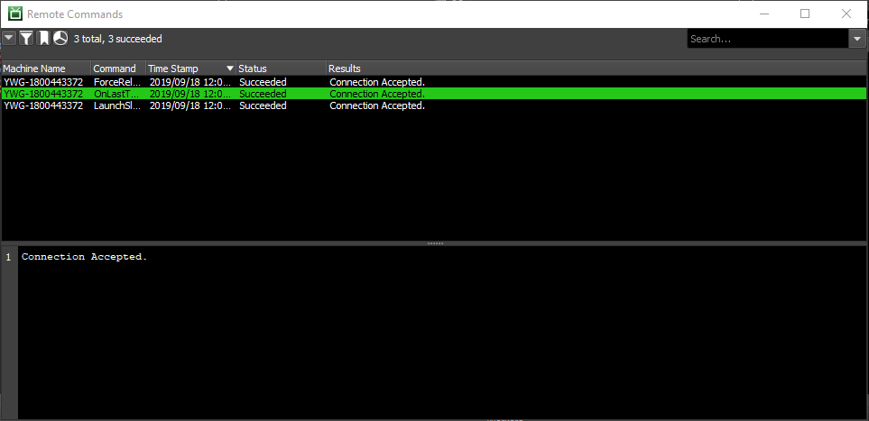
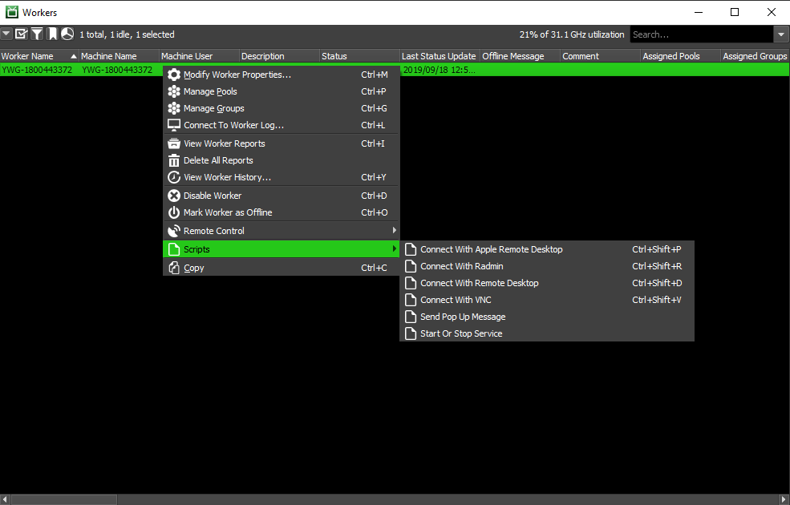
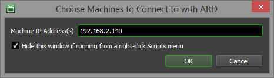
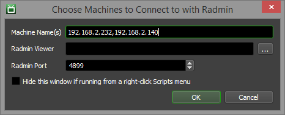
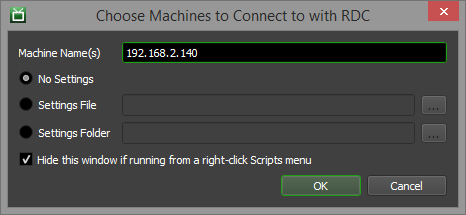
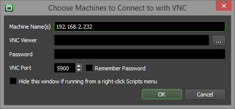

Remote Control¶
Overview¶
Note
By default, Remote Administration is disabled in Repository Configuration. Enabling Remote Administration allows the Deadline Clients to be controlled remotely from the Monitor running on another machine. Note that this can be a security risk if you are not behind a firewall.
Remote control features are built into the Monitor to make farm administration easier. These features allow you to connect to and control the Worker application on your render nodes, and also run remote commands on them. They also allow you to control Pulse as well (if you’re running it on your farm).
If the Workers or Pulse panels are not visible, see the Panel Features documentation for instructions on how to create new panels in the Monitor.
Connecting to the Application Logs¶
You can remotely connect to the Worker or Pulse log from the Monitor.
Connecting to the Worker Log¶
You can remotely connect to a Worker by double-clicking on it in the Worker panel, or by right-clicking on it and selecting Connect To Worker Log. This will bring up the Worker Log window, allowing you to see what the Worker is currently doing.

There are a few places in the Monitor you can find the option to connect to the Worker log:
The Worker panel right-click menu.
The Task panel right-click menu. Note that it will only appear for rendering or completed tasks.
The Job Report panel right-click menu.
The Worker Report panel right-click menu.
Remote Controlling Workers and Pulses¶
The Remote Control menu can be found in the Worker and Pulse panel’s right-click menu. Note that the availability of these options can vary depending on the context in which they are used, as well as the filters that are applied for the current user. Remote Administration must also be enabled on the farm, and can be enabled in the Repository Configuration.
These are the options that are available in the Worker and Pulse Remote Control menus:
Start Machine: Starts the machine using Wake On Lan. Ensure WOL is configured and consult the WOL Troubleshooting section for further help if required.
Shutdown Machine: Turns off the machine.
Restart Machine: Restarts the machine.
Suspend Machine: Sets the machines state as suspended (Windows Only).
Execute Command: Executes an arbitrary command on the machine.
When executing an arbitrary command, if you want to execute a DOS command on a Windows machine, the command must be preceded with “cmd /C”. This opens the DOS prompt, executes the command, and closes the prompt. For example:
cmd /C echo "foo" > c:\test.txt
These remote commands do not allow for user input for any command requiring a prompt. An example where this might cause confusion is with Microsoft’s xcopy command. Here, if the destination is uncertain to be a file or folder, xcopy will immediately exit as though successful instead of asking what should be done.
Please note that specific configuration should be done for Linux machines to allow them to be shut down or restarted. See Rebooting Linux Nodes for more details.
If a command returns a non-zero exit code, the command will be interpreted as having failed.
Worker Remote Control Options¶
These options are only available in the Worker Remote Control menu:
Search For Jobs: Forces the Worker to search the Repository for a job to do.
Cancel Current Tasks: Forces the Worker to cancel its current tasks.
Start Worker: Starts the Worker instance.
Stop Worker: Stops the Worker instance.
Restart Worker: Restarts the Worker instance.
Continue Running After Current Task Completion: The Worker will continue to run after it finishes its current task.
Stop Worker After Current Task Completion: The Worker will stop after the current task is completed.
Restart Worker After Current Task Completion: The Worker will restart after the current task is completed.
Shutdown Machine After Current Task Completion: The Machine running the Worker will stop after the current task is completed.
Restart Machine After Current Task Completion: The machine running the Worker will restart after the current task is completed.
Start All Worker Instances: Starts all the Worker instances on the selected machines.
Start New Worker Instance: Starts a new Worker instance with the specified name on the selected machine.

Pulse Remote Control Options¶
These options are only available in the Pulse Remote Control menu:
Perform Pending Job Scan: Forces Pulse to perform the Pending Job Scan operation.
Perform House Cleaning: Forces Pulse to perform the House Cleaning operation.
Perform Repository Repair: Forces Pulse to perform the Repository Repair operation.
Perform Power Management Check: Forces Pulse to perform the Power Management check.
Start Pulse: Starts the Pulse instance.
Stop Pulse: Stops the Pulse instance.
Restart Pulse: Restarts the Pulse instance.
Note
In Deadline 10.0.21 and later, the Perform Pending Job Scan, Perform House Cleaning, and Perform Repository Repair features are only supported if the target Pulse is connected directly to the Deadline repository and database. Pulse will not perform these operations if it is connected to a Remote Connection Server, but will still respond to these remote commands with “Success”. See the House Cleaning docs for more information.
Remote Commands Panel¶
The Remote Commands panel shows all pending and completed remote commands that were sent from the Monitor. When sending a remote command, if this panel is not already displayed, it will be displayed automatically (assuming you have permissions to see the Remote Commands panel).
You can view the results of a remote command by clicking on the command in the list. The full results will be shown in the log window below. All successful commands will start with “Connection Accepted.”
Remote Desktop Software¶
There are many applications which allows you to remotely control another computer. The following applications are supported by Deadline out of the box via Monitor scripts. The scripts can be run from the Scripts menu in the Monitor, or by right-clicking on a Worker or Pulse in their respective panels. Right-click scripts can also be found in the Task and Report panels.
Apple Remote Desktop (ARD)¶
With Apple Remote Desktop (ARD), you can observe and obtain access to the computers on your network. Note that in order to connect to a machine from the Monitor, that machine must already be in the ARD list of computers because Deadline can’t create new computer entries and add them to the list. An error message is displayed if the machine can’t be found in the ARD list.
The following options are available in the ARD window in the Monitor:
Machine IP Address(s): Specify which machines to connect to. Use a comma to separate multiple machine names.
Hide this window if running from a right-click Scripts menu: If enabled, this window will be hidden if run from a right-click menu in the Monitor. You can always run it from the main Scripts menu to see this window.
Radmin¶
Radmin is fast, secure and affordable remote-control software that enables you to work on a remote computer in real time as if you were sitting in front of it.
The following options are available in the Radmin window in the Monitor:
Machine Name(s): Specify which machines to connect to. Use a comma to separate multiple machine names.
Radmin Viewer: The Radmin viewer executable to use.
Radmin Port: The Radmin port.
Hide this window if running from a right-click Scripts menu: If enabled, this window will be hidden if run from a right-click menu in the Monitor. You can always run it from the main Scripts menu to see this window.
Remote Desktop Connection (RDC)¶
With Remote Desktop Connection (RDC), you can easily connect to a terminal server or to another computer running Windows. All you need is network access and permissions to connect to the other computer.
The following options are available in the RDC window in the Monitor:
Machine Name(s): Specify which machines to connect to. Use a comma to separate multiple machine names.
- Settings:
No Settings: When this option is chosen, no existing RDP settings are used to connect.
Settings File: When this option is chosen, the specified RDP config file is used to connect.
Settings Folder: When this option is enabled, existing RDP config files in this folder are used to connect. If the machine does not have an RDP config file, you’ll have the option to save one before connecting.
Hide this window if running from a right-click Scripts menu: If enabled, this window will be hidden if run from a right-click menu in the Monitor. You can always run it from the main Scripts menu to see this window.
VNC¶
Virtual Network Computing (VNC) is a desktop protocol to remotely control another computer. It transmits the keyboard presses and mouse clicks from one computer to another relaying the screen updates back in the other direction, over a network. There are many options available for VNC software. TightVNC, RealVNC, UltraVNC, and Chicken have all been used successfully with Deadline.
The following options are available in the VNC window in the Monitor:
Machine Name(s): Specify which machines to connect to. Use a comma to separate multiple machine names.
VNC Viewer: The VNC viewer executable to use.
Password: The VNC password.
VNC Port: The VNC port.
Remember Password: Enable to remember your password between sessions.
Hide this window if running from a right-click Scripts menu: If enabled, this window will be hidden if run from a right-click menu in the Monitor. You can always run it from the main Scripts menu to see this window.

{kind=link}
{kind=link}
{kind=link}
{kind=link}
{kind=link}
{kind=link}
{kind=link}
{kind=link}